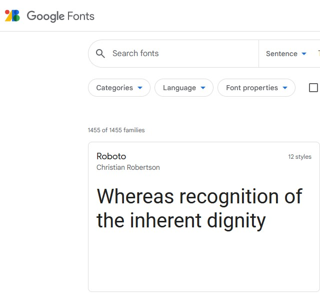

Clean Design
Google Fonts API
Google Fonts API has a good use of white-space making it have a clean design. The spacing around all the objects allows people who are viewing the page to stay calm when looking for a font.
Clean design comes mostly from the fact that all the fonts are separated into boxes and have spacing between them it just makes it more simple.
Rule of Thirds
Brigham Young University - Idaho
The image at the bottom of the screenshot follows the "Rule of Thirds", the focal point (the woman's face) is off to the right and the text (another focal point) is off to the left.
When images and the text are aligned in that way, it, for one, makes it easier to see the focus of the image as well as being able to read the text, which is probably the reason why both elements were place on the page...
Alignment
GitHub

The 6 logos at the bottom are aligned (in pairs) vertically and horizontally, it makes it simple and easy to understand. All the elements on the page are horizontally centered, making a direction of reading.
Alignment is probably one of the most important parts of design principles. You can use alignment to do nearly all of the other ideas/concepts. If you know how to use the alignment techniques properly, it will make your page look more appealing.